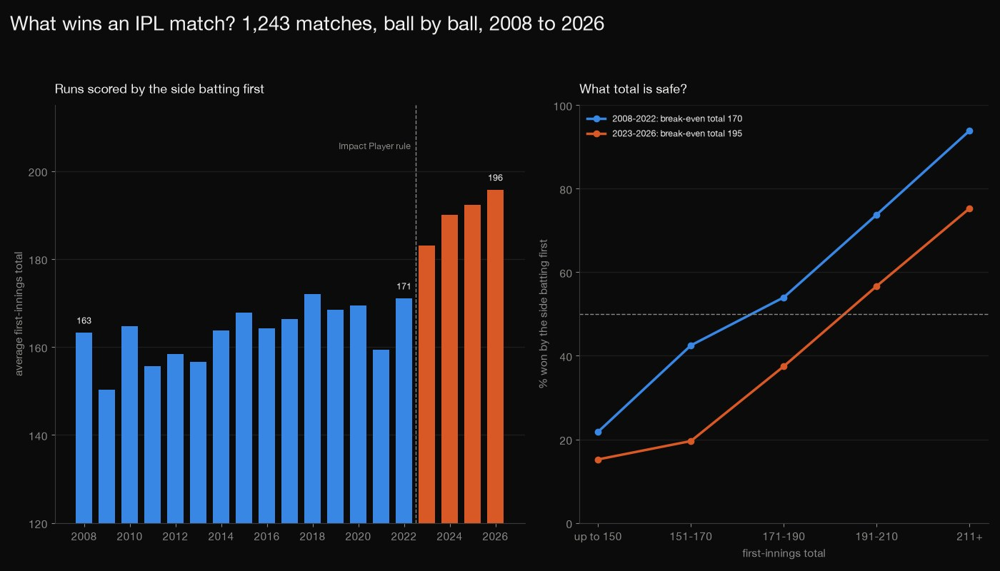
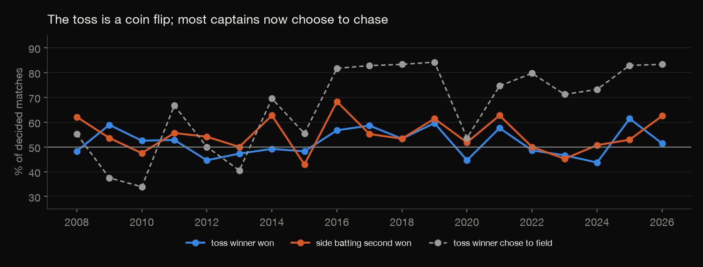
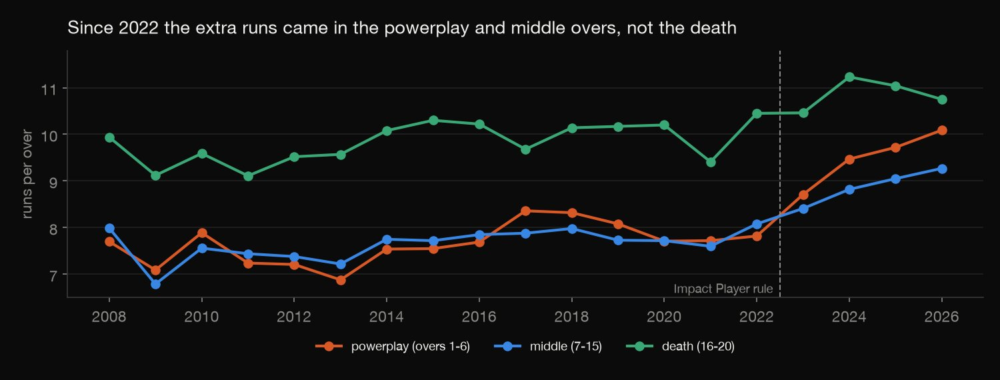
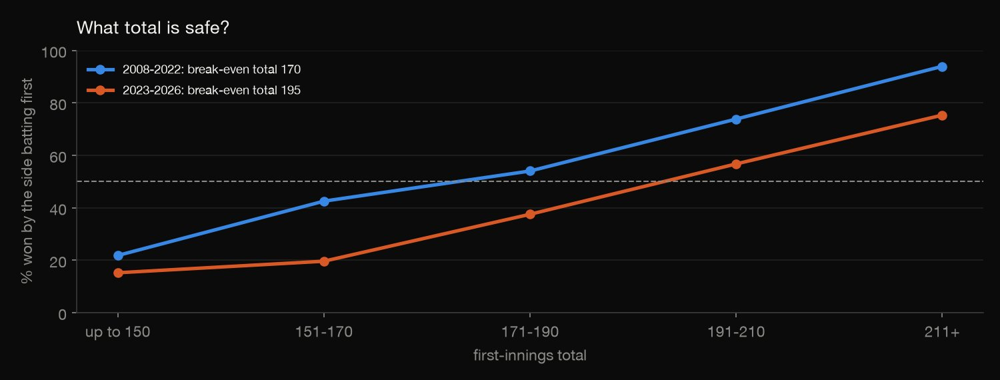
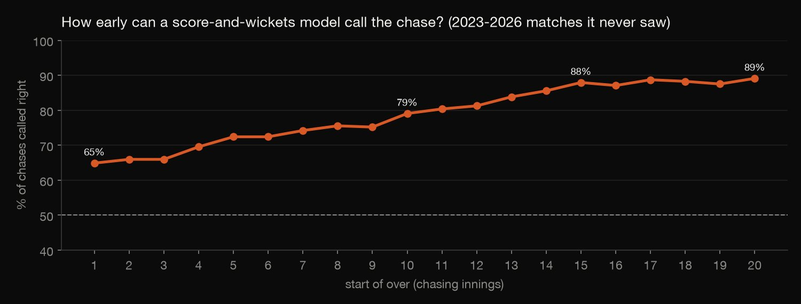
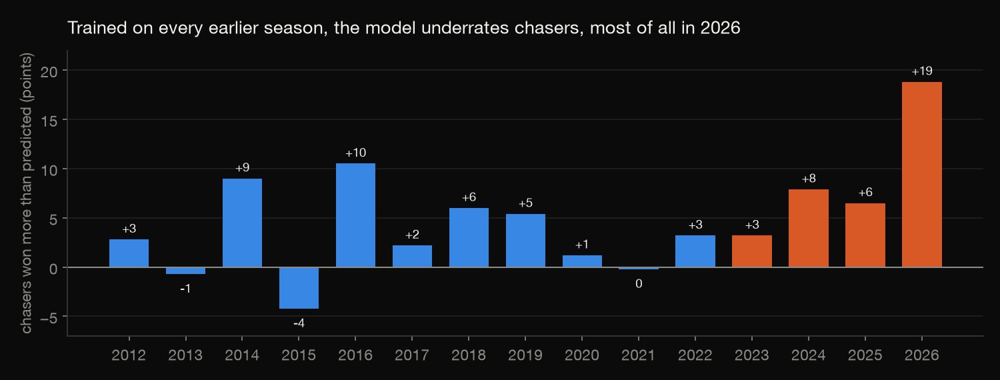

Python · Sports analytics · 2026-10
What Wins an IPL Match?
1,243 IPL matches, ball by ball: the toss is a coin flip, scoring jumped in 2023 and a safe total moved up about 25 runs, and a model that sees only score, wickets and balls left calls a chase right 79% of the time after nine overs, while still underrating chasers.

The model sees only runs needed, wickets and balls left, so it says who is ahead, not who is better. The Impact Player rule is the obvious suspect for the 2023 jump in scoring, but this data cannot prove cause. 2023 to 2026 is 279 matches, so the newer numbers carry wide intervals. Cricsheet states its data is under the Open Data Commons Attribution License.
01 — The problem
Cricket fans argue about three things: does the toss matter, how much has T20 scoring changed, and how big a total is safe? Then comes a harder one: from the score alone, how early can you tell who will win a chase?
Cricsheet publishes every IPL match ball by ball, so each argument can be counted: 1,243 matches from 2008 to 2026.
02 — What I built
Match and ball tables from the Cricsheet files, and four questions answered from them:
- The toss: win rates by season, with exact tests and intervals.
- Scoring: runs per over in the powerplay, middle and death overs, and the average first innings, every season.
- A safe total: the first-innings score at which batting first is a coin flip, before and after the 2023 Impact Player rule.
- A chase model: the chance the chasing side wins, from runs needed, balls left and wickets in hand, tested on seasons it never saw.
- Check:
check.pyrebuilds the tables from the raw files and refits every model by hand: 350 numbers agree.
03 — How it was built
- 01
Download every match
Cricsheet's IPL zip has one CSV per match (every ball: batter, bowler, runs, extras, wickets) and an info file per match (toss, winner, rain method). The script records the pull date and match count, so every number on this page traces to one snapshot (3 October 2026, 1,243 matches, 295,732 balls). The raw files are not committed.
- 02
Build the match table
One row per match, with the innings totals summed from the balls. A super-over tie counts as won by the super-over winner, but ties (16) and no-results (9) are left out of win-loss counts, and the 23 rain-adjusted matches are left out of scoring and the model. A rain-shortened target can read "9.2" overs (nine overs, two balls), so overs are read as numbers, not whole numbers.
tover = next((float(t[1]) for t in d.get("target_overs", []) if t[0] == "2"), None) # "9.2" = 9 overs 2 balls - 03
Is the toss worth anything?
For the 1,218 decided matches: how often does the toss winner win, and how often does the side batting second? Exact binomial tests against a 50-50 coin, with 95% intervals.
ci = lambda x: stats.binomtest(x, n).proportion_ci(0.95, method="wilson") - 04
Measure scoring by phase
Runs per over in the powerplay (overs 1 to 6), the middle overs (7 to 15) and the death overs (16 to 20), plus sixes and the average first innings, for every season. Only full 20-over matches are used, so rain-shortened innings don't drag the averages down.
- 05
Find the break-even total
A logistic curve of "the side batting first won" against the first-innings total gives the score at which the match is a coin flip. It is fitted separately for 2008 to 2022 and for 2023 to 2026, with an interval from the delta method.
par = -b0 / b1 var = (V[0, 0] + par ** 2 * V[1, 1] + 2 * par * V[0, 1]) / b1 ** 2 - 06
Teach a model to call the chase
At the start of every over of a chase the model sees four things: the runs needed per over, the wickets in hand, the balls left, and the first two multiplied. It returns the chance the chasing side wins. It is trained on 2008 to 2022 and tested on the 279 matches of 2023 to 2026, so it is never judged on matches it learned from. Within one match the snapshots are linked, which is why the split is by season.
snap["rrr"] = 6 * snap["need"] / snap["balls_left"] snap["rrr_x_wkts"] = snap["rrr"] * snap["wkts_in_hand"] - 07
Test it season by season
A walk-forward test trains on every earlier season and tests on the next one, 2012 to 2026. A second test retrains on 2008 to 2024, with and without a "new era" flag, and judges both on 2025 and 2026 against the original model.
- 08
Check it a different way
check.pyrereads the raw files with plain Python (no pandas, scikit-learn or statsmodels) and rebuilds the tables, re-extracts every chase snapshot ball by ball, and refits every logistic model with a hand-written Newton-Raphson. 350 numbers agree. The check also caught a real problem: scikit-learn's default solver had stopped early on the unscaled columns, giving slightly different coefficients, so the models are fitted by Newton-Raphson in statsmodels.for _ in range(100): p = 1 / (1 + np.exp(-X1 @ b)) w = p * (1 - p) step = np.linalg.solve(X1.T @ (X1 * w[:, None]), X1.T @ (y - p))
04 — Results

The toss is a coin flip. Toss winners won 628 of 1,218 decided matches (51.6%, 95% interval 48.8–54.4, p = 0.29). Chasing sides won 666 (54.7%, 51.9–57.5, p = 0.001). Captains choose to field in 66.5% of matches, and in 83% in 2025 and 2026.

Scoring jumped in 2023. The average first-innings total was 171 in 2022, then 183, 190, 192 and 196 in 2026. Powerplay runs per over went from 7.8 to 10.1 and middle-over runs from 8.1 to 9.3, but death overs only from 10.5 to 10.8. Sixes per match went from 14.4 in 2022 to 19.5 in 2026.

| Batting first | Even at | 191–210 | 211+ |
|---|---|---|---|
| 2008–22 | 170 | 73.8% | 93.9% |
| 2023–26 | 195 | 56.7% | 75.3% |
A safe total moved up about 25 runs. The first-innings total at which batting first is a coin flip was 170 (±4) in 2008–22 and 195 (±8) in 2023–26. Columns show the share of matches won by the side batting first.

A model can call the chase. Trained only on 2008–22, it is right 65% of the time before the first ball (from the target alone), 79% after nine overs and 88% after fourteen, on matches it never saw. The area under the curve is 0.89, and the log loss is 0.45 against 0.69 for guessing.

But it underrates chasers. Trained on earlier seasons only, it predicted fewer chase wins than happened in 12 of 15 seasons: by 3.2 points on average in 2012–22, 9.1 points in 2023–26, and 18.8 points in 2026. A target of 201–220 won 19% of chases before 2023 and 40% since; the model said 17%.
| Tested 2025–26 | Log loss | Said | Was |
|---|---|---|---|
| Trained to 2022 | 0.437 | 43% | 56% |
| Retrained to 2024 | 0.427 | 44% | 56% |
| + new-era flag | 0.390 | 48% | 56% |
"Said" is the average chance given to the chasing side; "Was" is how often chasers won. Retraining with a new-era flag helps, but the model still gives chasers too little.
Bottom line. The game changed in 2023: bigger totals, a higher break-even score, and chases that win far more often than a model built on the old game expects.
05 — What I'd do next
- Add team strength (each side's results before the match), so the model can say who is better as well as who is ahead.
- Look at where the extra runs come from by batting position, since the Impact Player rule lets a team swap in a specialist batter or bowler.
- Rerun after the 2027 season:
download.py,analyze.pyandcheck.pyrebuild everything.